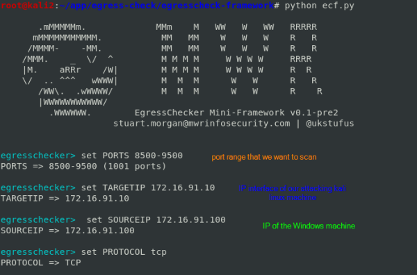

egress-framework
egress-framework
egresscheck framework is a tool that can automatically identify the ports that allow outbound
connectivity
we position in the folder were we want to download it and then:
git clone https://github.com/stufus/egresscheck-framework.git
enter in the folder downloaded
cd egresscheck-framework/
and we can execute this python tool
 we give
generate powershell-cmd in order to have a single PowerShell command that we will execute on the Windows
machine
This encrypted command contains code that will make PowerShell try to access every port in the given
range from the 172.16.91.100 machine on your Kali machine
• from the
kali
linux machine go in the /tmp folder where is the .bat file
to share the egress file we
create, like before, start a python web server in the /tmp folder of the kali linux machine
python -m SimpleHTTPServer 8080
• access from the
Windows machine at the file →
open the web browser and go to the address of the web server 172.16.91.10:8080 and download the .bat file
• now
come back to the
kali linux machine and start
wireshark
• from the
Windows
machine now we can execute the .bat file downloaded with permissions of Administrator
• now
on wireshark of the
kali linux
machine we put a Display filter with a range of the ports that we have scanned
(tcp.srcport >= 8500 and tcp.srcport <= 9000) or (tcp.dstport >= 8500 and tcp.dstport <= 9000)
if
any ports is displayed means that this port is also allowed outbound connectivity on the 172.16.91.100 machine’s
firewall
in the next pic we can see that on the
9000 port is allowed outbound
connectivity
We have found only the
9000 port because we have set a range of 8500-9000